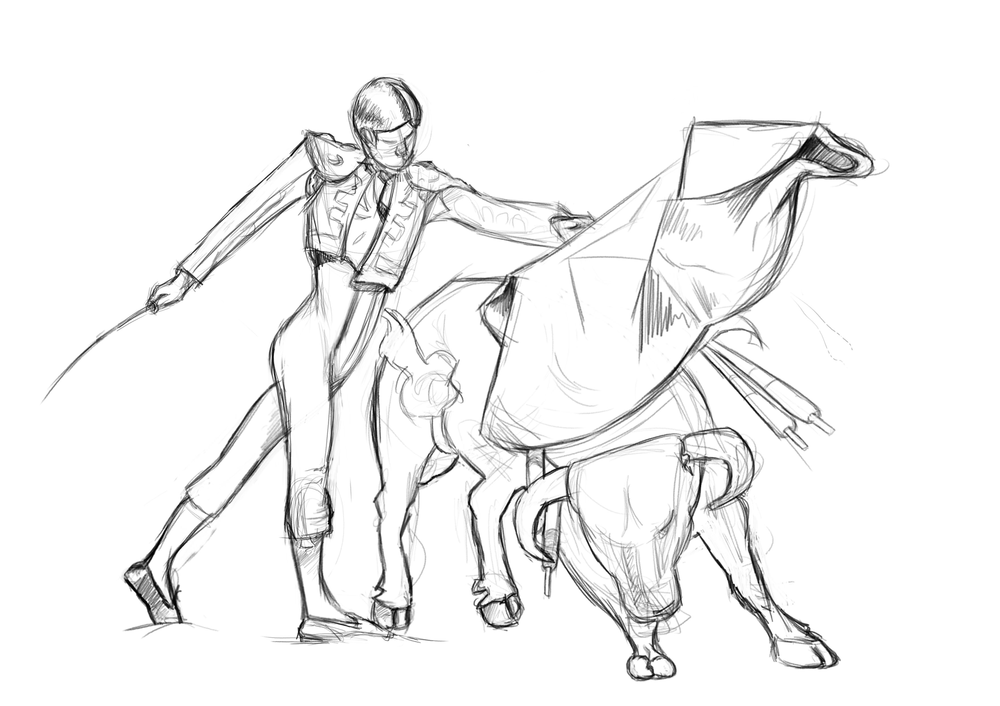
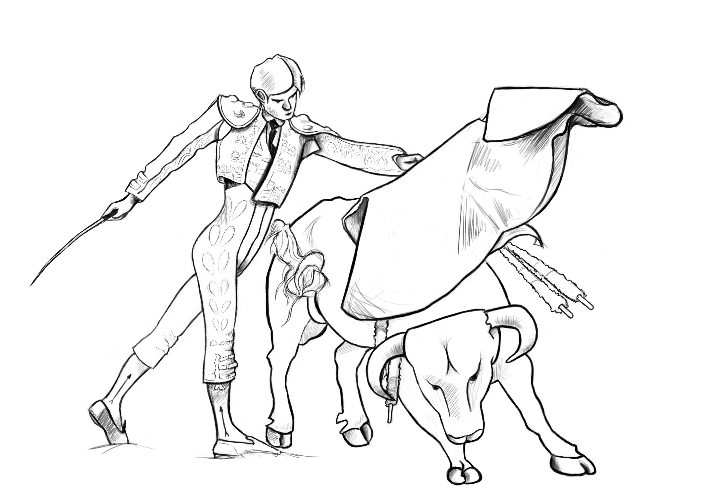
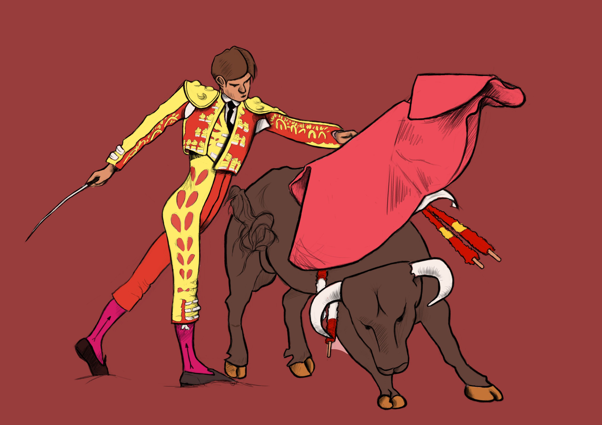
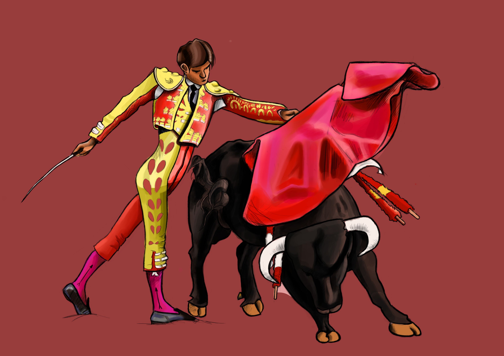
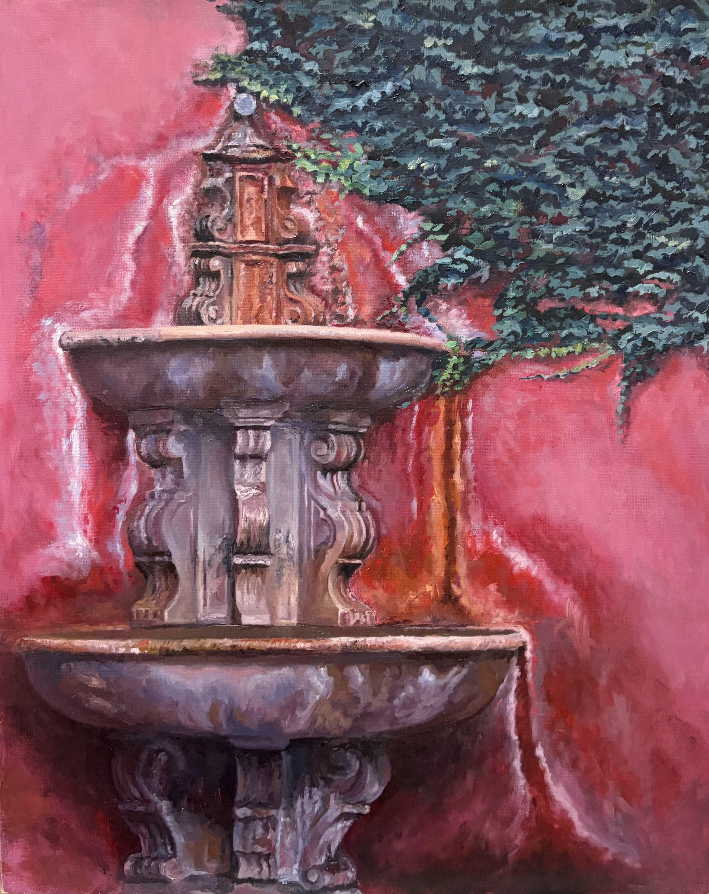
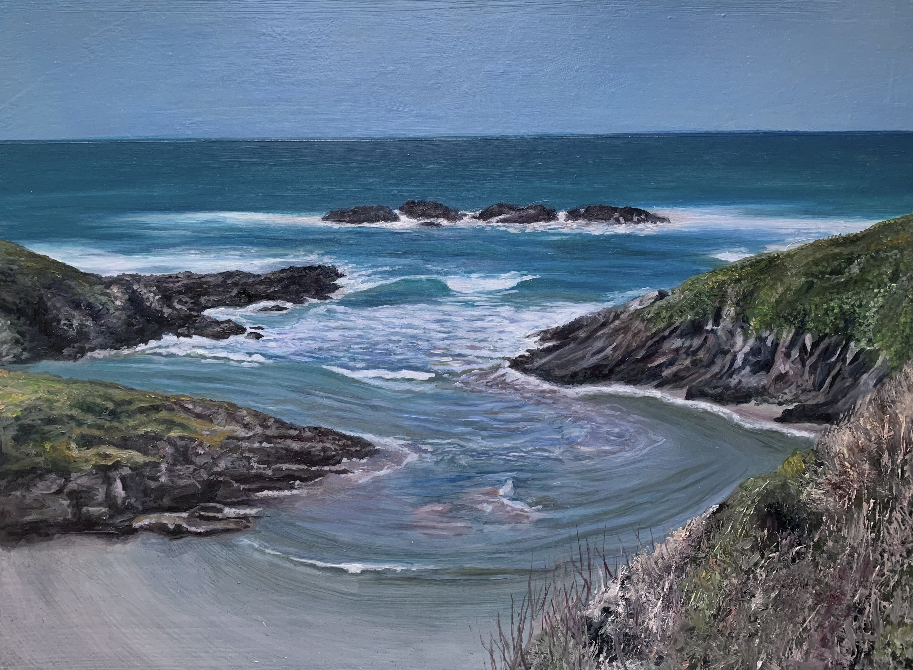
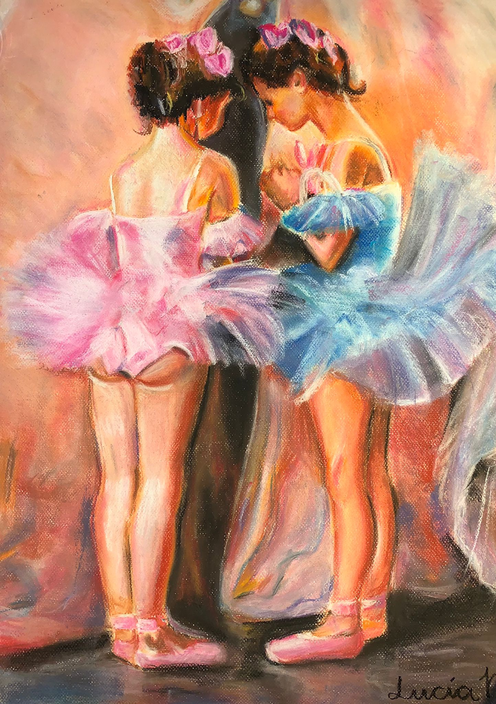
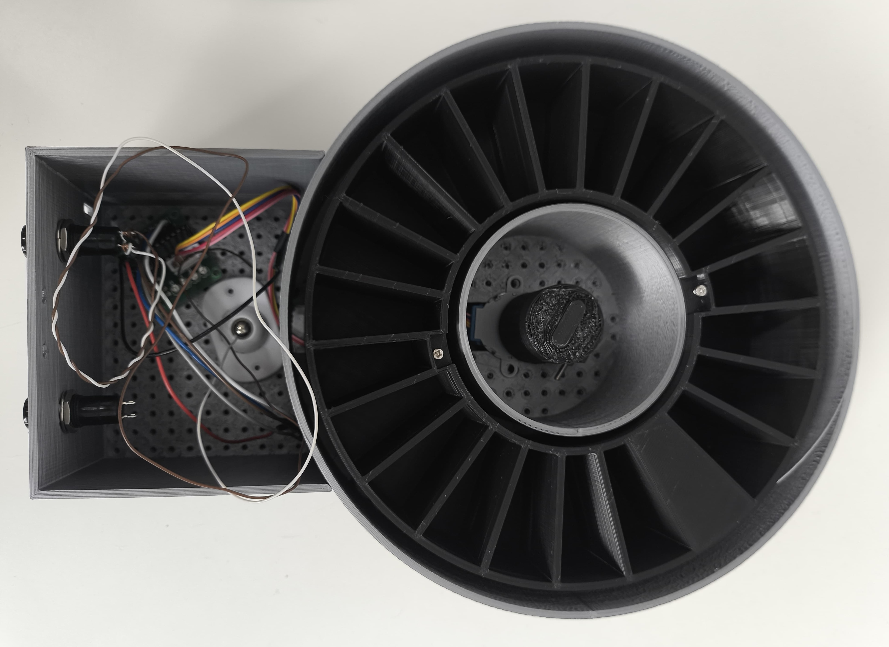

Lenguajes de programación (Java, Python, Ensamblador, Matlab, VHDL).
MATLAB Onramp – MathWorks (2024)
Modelación 3D (FreeCAD).
Español (Nativa).
Inglés (Fluido - Cambridge Proficiency Certificate C2).
Trabajo en equipo, creatividad, sensibilidad estética y atención al detalle, pensamiento crítico, autonomía, liderazgo, aprendizaje continuo.
Ubicación: Madrid, España
Teléfono: +34 615 015 448